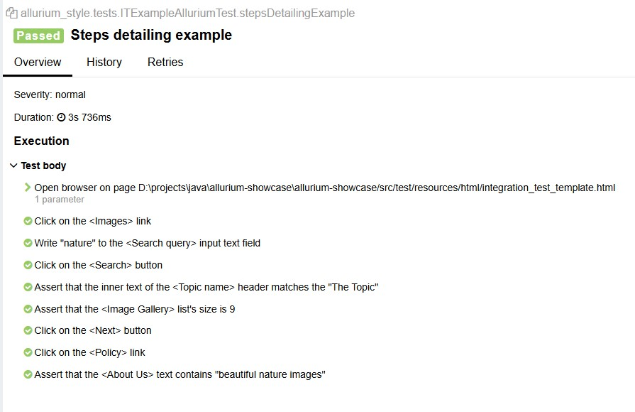

Как видели из примера выше, в файле allurium-steps.yml с шаблонами шагов существует два варианта описания.
Первый — базовое описание шага, а второй — более информативное, содержащее положение объекта. Мы можем выбрать, какую детализацию использовать в отчётах.
Для этого необходимо:
- Открыть файл
allurium.propertiesв "src/main/resources" - Найти или добавить параметр:
step.detailing=1илиstep.detailing=2
Теперь, в зависимости от указанного уровня, в отчёте будет отображаться разная детализация репорта.
При step.detailing=1

При step.detailing=2

Изначально эта возможность задумывалась исключительно для изменения детализации отчёта, но её также можно использовать для альтернативного написания шагов и простого переключения, так как нет ограничений на переписывание шаблонов шагов, как обсуждалось ранее.